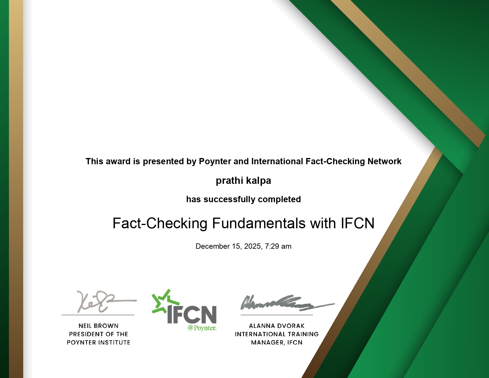

Certificate Gallery
Credential Images

Blockchain Deep Dive

Cryptocurrency Deep Dive

DeFi Deep Dive

DApps Deep Dive

NFT Deep Dive

Crypto Trading Deep Dive

Learning Data Analytics

Learning Data Analytics II

Spotting Misinformation Online

Creating Online Content

Data Journalism — Journalism Now

Fact-Checking Fundamentals — IFCN

Introduction to OSINT

Google Fact Check Tools — GNI